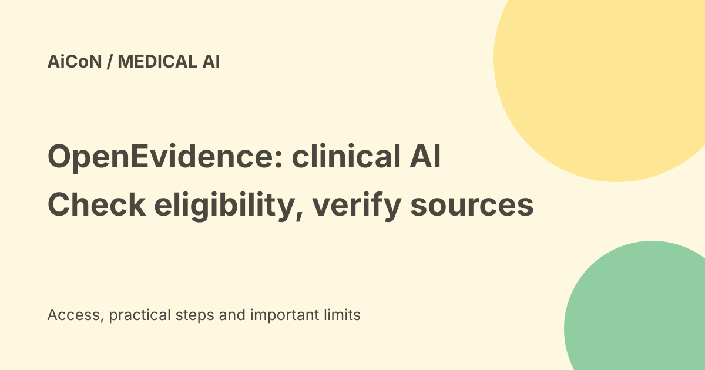

OpenEvidence: free clinical AI expansion, but India access is unconfirmed
OpenEvidence helps clinicians find and interpret medical evidence. Reuters reports an Anthropic-backed expansion offering a specialised free version in about 100 lower- and middle-income countries. That report does not confirm that any Indian doctor can sign up immediately.

What is OpenEvidence?
OpenEvidence is a clinical information service that answers medical questions using research and guidelines. Its homepage lists content agreements with organisations including NEJM, JAMA, Nature, NCCN and Cochrane. Access to trusted literature is useful, but an AI's synthesis can still need checking against the original source.
This guide is about product access and limits, not medical advice. It does not recommend a diagnosis, medicine or treatment. A consumer should seek appropriate clinical care instead of using a professional tool as a substitute.
What did the Anthropic partnership announce?
Reuters reported on 22 September 2026 that Anthropic and OpenEvidence were collaborating on a specialised clinical-support version for lower- and middle-income regions. It said the initiative was rolling out in about 100 countries, based on a list provided by OpenEvidence, and named examples including Uganda, Angola, Sudan, Haiti and Mongolia.
The report says Anthropic provides back-end support while OpenEvidence adapts the system to regional healthcare conditions. Financial terms were not disclosed. This is a reported rollout, not a verified universal signup route or a list of every eligible country in this guide.
What is free, and for whom?
| Current main homepage | Free for verified U.S. healthcare professionals. |
|---|---|
| Reported international initiative | A specialised version offered free to eligible providers in participating regions. |
| India | Not confirmed by the checked country examples or homepage terms. |
| Professional verification | Use your own legitimate credentials and the current official eligibility process. |
Do not infer India access from Anthropic's general API country list. A model provider's commercial availability and this clinical programme's eligibility are different things. Likewise, a global partnership does not automatically give every student or consumer a free clinical account.
We did not register a physician account, test Indian credentials or verify an institution-specific offer. Ask the official service or your institution which version and verification path applies.
Why regional adaptation matters
OpenEvidence's official Rwanda announcement describes a pilot with 45 physicians and nurse clinicians giving feedback. It says disease patterns, medicines, diagnostic resources and clinical practice differ across regions. An answer assuming an unavailable test or drug may be unsuitable even when its source is reliable.
The official Penn Medicine announcement also describes tools shaped with the Botswana-UPenn Partnership. These are concrete examples of local adaptation work. They do not prove that the same programme is enabled at every hospital or tailored for India.
A careful professional evaluation
- Confirm eligibility and the exact official product version with your institution or the service.
- Review data terms, retention and any approved patient-information workflow before entering clinical context.
- Begin with a general, non-identifying literature question.
- Open cited studies and guidelines; check date, patient population and applicability.
- Compare the answer with local guidance, available resources and clinical judgment.
- Document and report errors through the institution's approved process. Do not automate clinical decisions from an AI answer.
We did not upload patient information, ask for a diagnosis or test clinical outputs. The product's evidence-grounding claims are not a hands-on accuracy assessment.
Privacy and evidence limits
Medical context can identify a patient even without a name. Do not put sensitive details into a service merely because its signup is free. Follow your institution's approved use and confidentiality rules. A partnership announcement does not settle every account's storage, training or compliance terms.
Population-level adoption claims are also separate from safety evidence. Reuters quotes company usage statements; this guide does not use them to claim a tool is clinically accurate or a guaranteed fit for Indian practice.
Frequently asked questions
Can an Indian doctor definitely join now?
The sources checked here do not establish that. Confirm the current eligibility path.
Is this a free consumer health chatbot?
The cited initiative is professional clinical decision support, not an invitation to self-diagnose.
Do citations remove the need to verify an answer?
No. Read the evidence and check local applicability.
What changed since the earlier post?
This guide separates the U.S. homepage offer from the reported international rollout, retains the India uncertainty and adds official regional-pilot context. It does not turn an approximately 100-country announcement into immediate access for every physician.
Sources: Current homepage and professional offer · Reuters partnership report · Official Rwanda pilot announcement · Official Penn Medicine partnership. Checked 8 October 2026.